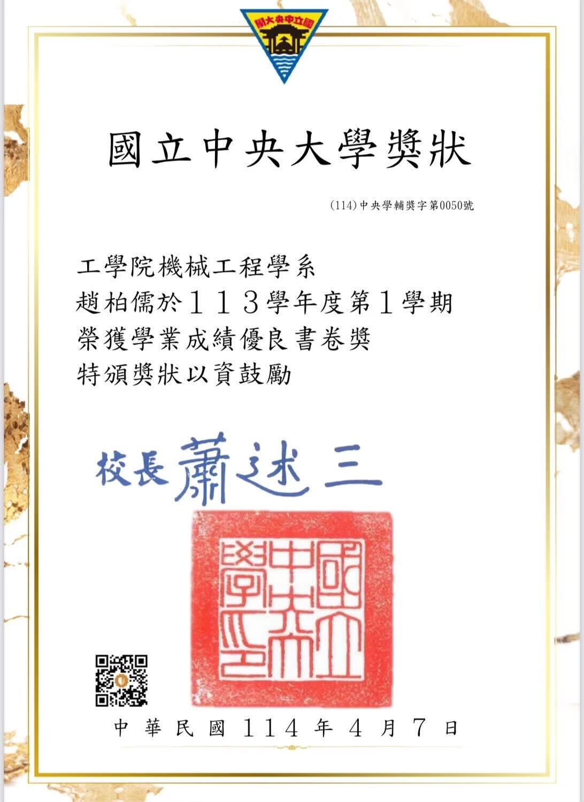
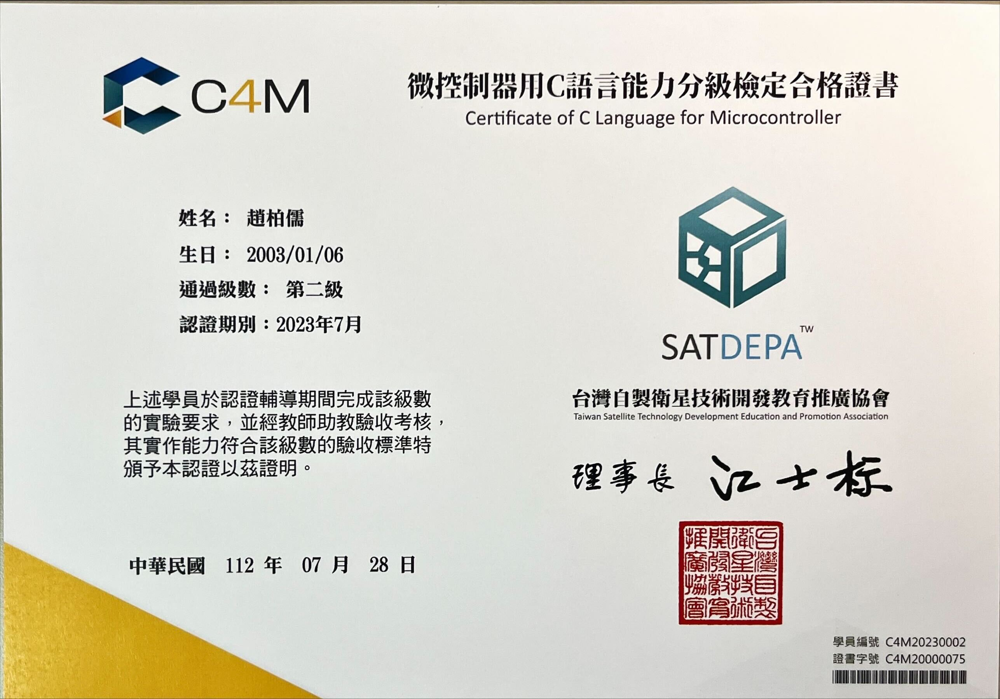
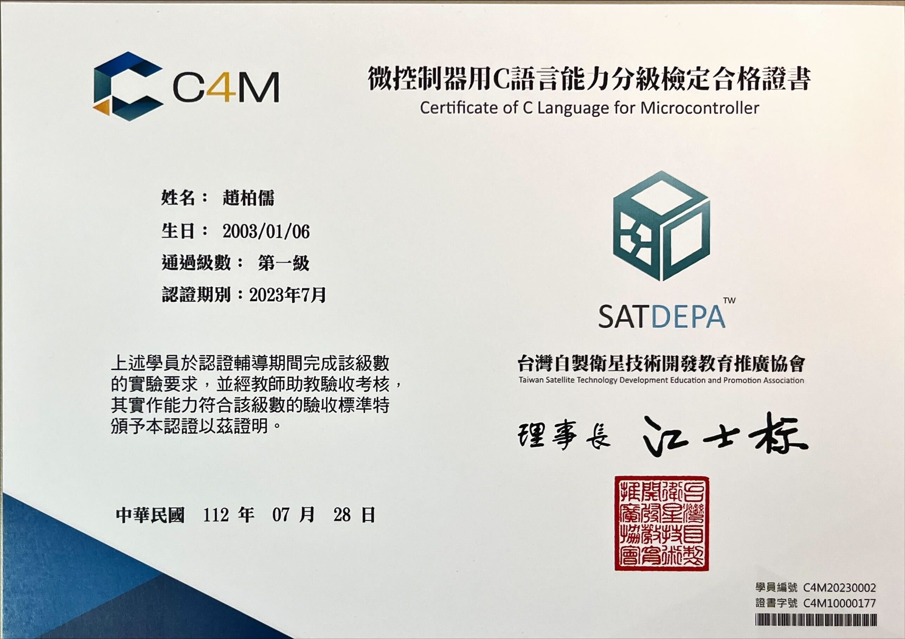
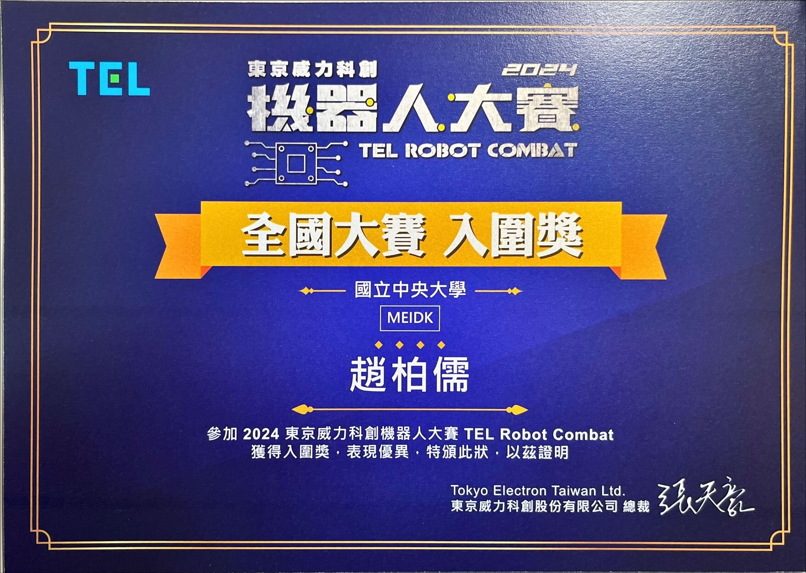
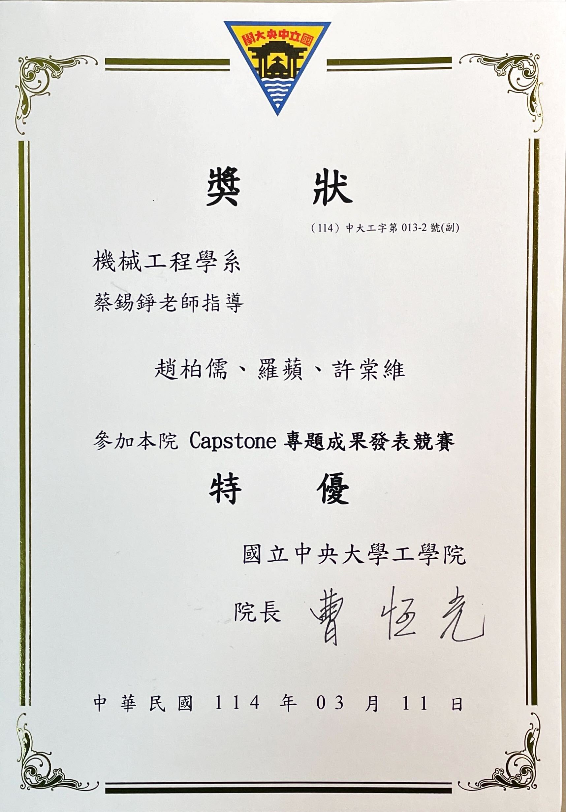
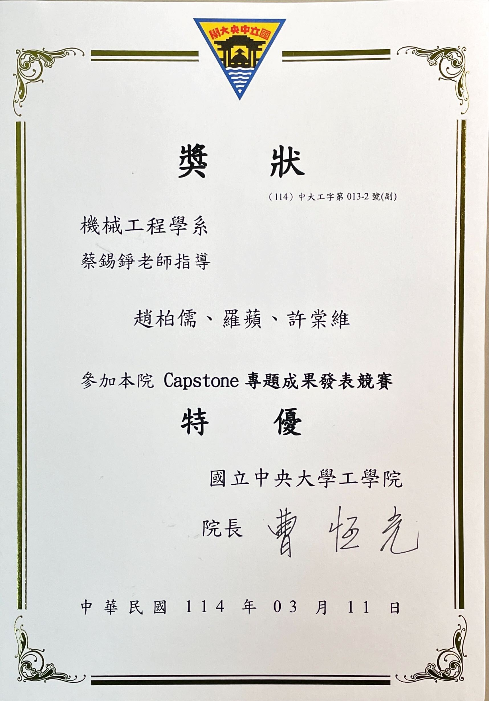
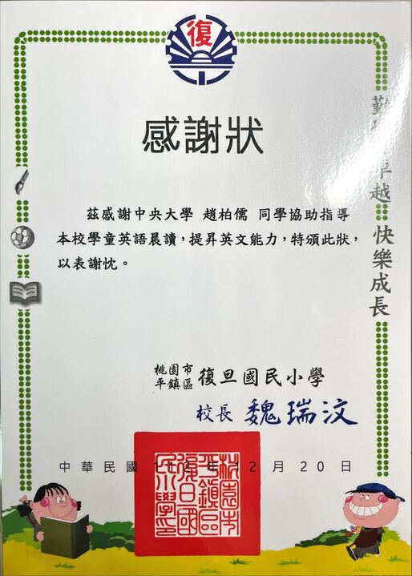

Academic Excellence Award, National Central University, 2024
Ranked among the top 5% of students in the College of Engineering, Department of Mechanical Engineering.
Recognized with the Academic Excellence (Shu-Chuan) Award for outstanding GPA and consistent performance.
Selected by the university to receive merit-based honors for academic distinction.

Independent Study Projects, National Central University (2021–2023)
Completed a series of four faculty-supervised independent study projects in mechanical engineering design.
Projects included: Mechanical Concept Prototyping, Omni-directional Vehicle, Humanoid Mechanism, and Intelligent Autonomous Systems.
Strengthened hands-on skills in creative design, robotics mechanisms, and autonomous system integration.


Certificate of C Language for Microcontroller (2023)
Successfully completed hands-on certification using a professor-developed microcontroller board.
Designed and implemented a functional electronic calculator through hardware wiring and C programming.
Passed on-site evaluation conducted by teaching assistants to verify practical coding and circuit integration skills.

TEL Robot Combat – Finalist, Top 8 Nationwide (2024)
Selected from nearly 100 competing teams through preliminary screening and interview stages.
Advanced to the final round, achieving Top 8 ranking nationwide after winning two elimination rounds.
Designed and operated a custom-built combat robot under strict competition conditions.
 

Capstone Project – High Distinction Award, National Central University (2025)
Nominated by the Department of Mechanical Engineering to represent the department in the College of Engineering Capstone Presentation Competition.
Delivered a comprehensive presentation on the senior capstone project, demonstrating system design, implementation, and performance results.
Achieved the highest distinction award, ranking as the top project across the College of Engineering.

Volunteer English Reading Tutor, Fudan Elementary School (Spring 2023)
Participated in a semester-long after-school reading program to support elementary school students in English learning.
Guided children through English storybooks, helping them improve reading fluency and language comprehension.
Recognized with a Certificate of Appreciation for contributions to the school’s English learning initiative.
© Copyright 2025. All Rights Reserved.